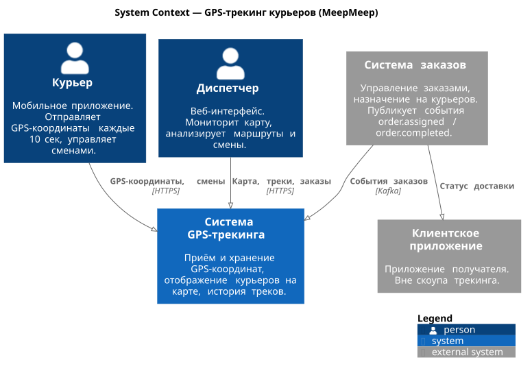
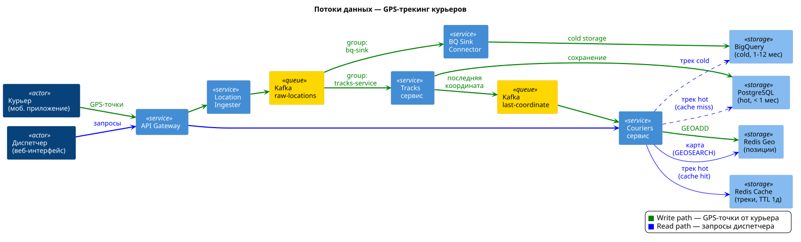

SAD — Solution Architecture Document — Система GPS-трекинга курьеров¶
1. Общая информация¶
Название: Система GPS-трекинга курьеров
Ответственный: Вячеслав Мельников
PRD: PRD — Система GPS-трекинга курьеров
2. Цель¶
Обеспечить отслеживание курьеров в реальном времени и хранение истории перемещений для федерального сервиса доставки.
3. Контекст¶
MeepMeep — федеральный логистический оператор, работающий по всей РФ (11 часовых поясов). Курьерская сеть охватывает всю страну — система работает круглосуточно, т.к. когда в Москве ночь, во Владивостоке уже рабочий день. Курьеры (мобильное приложение) отправляют GPS-координаты, диспетчеры (веб-интерфейс) мониторят карту и анализируют маршруты. Система заказов и клиентское приложение уже существуют — трекинг интегрируется с ними через внутренние API.
Ключевые заинтересованные стороны: диспетчерская служба, операционный отдел, команда системы заказов (интеграция, этап 2).
Основные архитектурные драйверы (ASR):
- Write-heavy система (20k RPS запись vs ~1k RPS чтение)
- Staleness < 1 мин
- Availability 99.99%
- Хранение истории 1 год (~95 ТБ)
- Эластичность под пиковые нагрузки (x3)
4. Архитектура решения¶
4.1. Основные компоненты и интеграции¶
Сервисы:
- API Gateway + Load Balancer — точка входа, маршрутизация, rate limiting
- Location Ingester — тонкий stateless сервис на входе write-path. Валидация + запись в Kafka. Не ходит в БД, защищает pipeline от потери данных при перегрузке Tracks сервиса
- Tracks сервис — потребление GPS-точек из Kafka, хранение треков в PostgreSQL, публикация последней координаты в Kafka
- Couriers сервис — профили курьеров, статусы, смены, отдача треков (роутинг между hot/cold хранилищами)
Хранилища:
- Redis Geo — текущие позиции курьеров (GEOADD/GEOSEARCH), hot data для карты
- Redis Cache — кэш завершённых треков (STRING, TTL 1 день)
- PostgreSQL (Tracks) — GPS-точки за последний месяц, партиционирование по месяцам, async-репликация (Kafka = source of truth), master + 2 реплики
- PostgreSQL (Couriers) — профили, смены, метаданные, semi-sync репликация (1 sync + 1 async)
- BigQuery — холодные треки (1-12 месяцев), данные поступают параллельно из Kafka через BigQuery Sink Connector
BigQuery Sink Connector (Kafka Connect) — отдельный consumer group (bq-sink) на топике raw-locations, пишет GPS-точки напрямую в BigQuery. Данные попадают в BigQuery параллельно с PostgreSQL, перекладка не нужна.
Kafka (RF=3, 3 брокера):
| Топик | Партиции | Ключ | Producer | Consumer (group) | acks | Retention |
|---|---|---|---|---|---|---|
raw-locations |
64 | courier_id | Location Ingester | Tracks сервис (tracks-service), BQ Sink Connector (bq-sink) |
1 | 7 дней |
last-coordinate |
16 | courier_id | Tracks сервис | Couriers сервис (couriers-service) |
1 | 24 часа |
- Ключ courier_id — точки одного курьера всегда в одной партиции, порядок гарантирован
- acks=1 — лидер партиции подтвердил запись. Компромисс: скорость при 20k RPS, потеря единичных точек при падении лидера допустима (клиент пришлёт повторно)
- Micro-batching — consumer Tracks сервиса забирает пачку сообщений из
raw-locationsза одинpoll(), формирует multi-row INSERT в PostgreSQL - Consumer rebalance — при падении инстанса consumer'а его партиции автоматически перераспределяются между оставшимися
- Два consumer group на
raw-locations—tracks-serviceпишет в PG (hot),bq-sinkпишет в BigQuery (cold). Consumer groups читают один топик независимо, каждый хранит свой offset - Kafka vs RabbitMQ — Kafka выбрана как append-only лог событий: replay, несколько consumer groups на одном топике, высокий throughput. RabbitMQ — task queue (задача удаляется после ack), не подходит для потока GPS-данных
4.2. Системный контекст (C4)¶

4.3. Потоки данных¶

Write path (зелёный) — GPS-точки от курьера через Location Ingester попадают в Kafka (raw-locations). Далее два независимых consumer group'а обрабатывают данные параллельно:
- Tracks сервис (
tracks-service) — сохраняет в PostgreSQL (hot storage), публикует последнюю координату вlast-coordinate - BigQuery Sink Connector (
bq-sink) — пишет напрямую в BigQuery (cold storage)
Couriers сервис потребляет last-coordinate и обновляет Redis Geo. Точки с accuracy > 100м игнорируются — на карте остаётся последняя хорошая позиция. В PG данные сохраняются все (для полноты истории).
Read path (синий) — запросы диспетчера через API Gateway к Couriers сервису, который роутит по сценарию:
- Карта — Redis GEOSEARCH, polling каждые 5 сек
- Трек смены (hot, < 1 мес) — Redis Cache (hit) или PostgreSQL slave (miss → кэш)
- Трек смены (cold, 1–12 мес) — BigQuery
Роутинг hot/cold по дате начала смены. Два адаптера за единым интерфейсом. Hot window фактически 1-2 месяца (помесячные партиции — данные за начало месяца живут до дропа в следующем). Если смена старше последней живой партиции — роутинг в BigQuery.
Lifecycle партиций — партиции создаются заранее на 3 месяца вперёд (запас при сбое cron). Одновременно живут: текущая + прошлый месяц + 3 будущих. Cron job раз в месяц: (1) создаёт следующую партицию, (2) выполняет DROP PARTITION для партиций старше 1 месяца. DROP PARTITION — мгновенная операция (O(1)), в отличие от DELETE который сканирует и помечает строки. Pre-check: перед дропом проверяется consumer lag группы bq-sink — если lag > 0, дроп не выполняется и срабатывает алерт. Это гарантирует, что данные доехали в BigQuery.
4.4. API-контракты¶
Полная спецификация — OpenAPI (Swagger UI). Ниже — сводная таблица.
Два API с разной стратегией версионирования:
- Courier API (
/api/v1/courier/...) — мобильное приложение. Версионируется, т.к. мобильные клиенты нельзя принудительно обновить. - Operator API (
/api/operator/...) — веб-интерфейс. Без версионирования, т.к. веб всегда на актуальной версии.
Аутентификация: Courier API — X-Api-Token (courier_id из токена), Operator API — JWT в httpOnly cookie.
Courier API (мобильное приложение)¶
| Метод | Эндпоинт | Назначение |
|---|---|---|
| POST | /api/v1/courier/shifts |
Открыть смену (идемпотентный ключ) |
| DELETE | /api/v1/courier/shifts/{shiftId} |
Закрыть смену |
| POST | /api/v1/courier/locations |
Отправить GPS-координату |
| POST | /api/v1/courier/locations/batch |
Отправить буфер GPS-координат (до 100 шт) |
Operator API (веб-интерфейс)¶
| Метод | Эндпоинт | Назначение |
|---|---|---|
| GET | /api/operator/map/couriers?lat1&lng1&lat2&lng2 |
Курьеры в области карты (bounding box, polling 5 сек) |
| GET | /api/operator/couriers?limit&offset&status |
Список курьеров |
| GET | /api/operator/couriers/{courierId} |
Профиль курьера |
| GET | /api/operator/couriers/{courierId}/shifts?limit&offset&dateFrom&dateTo |
Смены курьера |
| GET | /api/operator/couriers/{courierId}/shifts/{shiftId} |
Детали смены |
| GET | /api/operator/shifts/{shiftId}/locations |
Трек смены |
Operator API: Заказы (этап 2)¶
| Метод | Эндпоинт | Назначение |
|---|---|---|
| GET | /api/operator/shifts/{shiftId}/orders |
Заказы в смене |
| GET | /api/operator/orders/{orderId} |
Детали заказа |
| GET | /api/operator/orders/{orderId}/locations |
Трек заказа |
Ключевые решения:
- Трек привязан к смене, не к курьеру (shift_id уникален глобально)
- Трек заказа = фильтрация locations по
shift_id + created_at BETWEEN orders.started_at AND orders.ended_at(shift_id берётся из таблицы orders, используется существующий индекс) - Заказы — overlay на историческом треке, не на карте реального времени
4.5. Схема данных¶
PostgreSQL — Couriers DB:
| Таблица | Поле | Тип | Nullable | Пример |
|---|---|---|---|---|
| couriers | id | int | no | 1, 2, 3 |
| first_name | string | no | "Иван" | |
| last_name | string | no | "Иванов" | |
| shifts | id | int | no | 1, 2, 3 |
| courier_id | int FK→couriers | no | 1 | |
| started_at | ts with tz | no | '2026-01-01T09:00:00+03:00' | |
| ended_at | ts with tz | yes | '2026-01-01T21:00:00+03:00' | |
| orders | order_id | int | no | 1001 |
| shift_id | int FK→shifts | no | 1 | |
| courier_id | int FK→couriers | no | 1 | |
| started_at | ts with tz | no | '2026-01-01T10:00:00+03:00' | |
| ended_at | ts with tz | yes | '2026-01-01T10:45:00+03:00' |
shifts: partial unique index on(courier_id, ended_at) WHERE ended_at IS NULL— защита от двух открытых сменshifts: B-tree индекс(courier_id, started_at DESC)— для пагинации смен курьера с фильтрацией по дате- Статус "на линии" определяется наличием незакрытой смены, отдельного поля status нет
orders: order_id приходит из внешней системы заказов, адреса и детали заказа не дублируем- Трек заказа = фильтрация locations по
shift_id + created_at BETWEEN orders.started_at AND orders.ended_at(shift_id берётся из таблицы orders, используется существующий индекс) - Интеграция с системой заказов (этап 2): система заказов публикует события ("заказ назначен", "заказ завершён") в Kafka, Couriers сервис потребляет и сохраняет в таблицу
orders. При недоступности системы заказов — данные доедут с задержкой, диспетчер видит всё что успело приехать
PostgreSQL — Tracks DB (партиционирование по месяцам):
| Таблица | Поле | Тип | Nullable | Пример |
|---|---|---|---|---|
| locations | shift_id | int | no | 1 |
| courier_id | int | no | 1 | |
| lat | double precision | no | 55.7558 | |
| lng | double precision | no | 37.6173 | |
| accuracy | float | no | 10.5 | |
| created_at | ts with tz | no | '2026-01-01T10:05:30+03:00' |
shift_idиcourier_id— логические связи, не FK. Tracks DB и Couriers DB — разные PG-инстансы, cross-database FK невозможны. Целостность обеспечивается на уровне приложения (данные приходят из Kafka с уже валидированными идентификаторами)- Таблица без Primary Key — осознанный trade-off. Записи append-only, удаление только через DROP PARTITION, чтение — трек целиком. PK/UNIQUE на 1.3 млрд строк/сутки замедлил бы INSERT без реальной пользы. Единичные дубли при batch retry допустимы (незаметны на треке из 5000 точек)
- Партиционирование по
created_at(помесячно) - BRIN-индекс на
created_at— данные записываются последовательно во времени, BRIN хранит min/max по блокам страниц вместо индексации каждой строки. Размер индекса ~МБ вместо десятков ГБ (B-tree) при 1.3 млрд строк/сутки. Используется для мониторинговых и отладочных запросов по диапазону времени ("сколько точек за последние 5 минут", "точки курьера за последний час"). Основные запросы треков идут через B-tree(shift_id, created_at) - B-tree индекс на
(shift_id, created_at)— для запросов трека конкретной смены. Составной индекс позволяет отдать точки уже отсортированными по времени без дополнительного Sort в плане запроса
BigQuery (cold storage):
- Та же структура
locations, данные поступают параллельно из Kafka через BigQuery Sink Connector PARTITION BY DATE(created_at)— partition pruning по дате, запрос сканирует только нужный деньCLUSTER BY shift_id, courier_id— данные внутри партиции отсортированы по shift_id, запрос трека смены сканирует минимум блоков. Без кластеризации запрос за год (95 ТБ) = full scan (~$0.50), с кластеризацией — ~$0.001- Retention 7 дней на топике
raw-locations— запас на случай падения Sink Connector'а (продолжит с сохранённого offset)
Redis Geo (текущие позиции):
- Key:
couriers:active, Members:{courierId}, Score: geohash(lat, lng) GEOADDработает как upsert — если courier_id уже существует, координаты обновляются. Всегда одна точка на курьера, дублей нет (Redis Geo = Sorted Set под капотом)- При закрытии смены —
ZREM couriers:active {courierId}(убрать курьера с карты)
Redis HSET (метаданные позиции):
- Key:
couriers:last_seen, Field:{courierId}, Value: timestamp последнего обновления - Обновляется вместе с GEOADD при каждом получении координаты
- Фоновая задача (раз в минуту): удаляет из
couriers:activeкурьеров сlast_seen> 5 мин — защита от "призраков" (приложение крашнулось, смена не закрыта, координаты не приходят)
Redis STRING (кэш завершённых треков):
- Команда:
SET track:{shiftId} <json> EX 86400 - Key:
track:{shiftId}, Value: JSON-массив точек ([{lat, lng, accuracy, created_at}, ...]), TTL 1 день
4.6. Кэширование¶
- Redis Geo — текущие позиции всех активных курьеров. Источник данных для карты диспетчера.
- Redis STRING — кэш завершённых треков. TTL 1 день. Ключ:
track:{shiftId}. Иммутабельные данные — инвалидация не нужна. - Незавершённые треки (текущая смена) — всегда из PostgreSQL, не кэшируются.
4.7. Важные решения и обоснования¶
- Polling vs WebSocket — см. ADR-001
- Bounding box vs Radius — выбран bounding box: карта SDK отдаёт bounds viewport из коробки, радиус добавляет лишнюю математику без выгоды
- Hot/Cold storage — см. ADR-002
- Redis Geo для текущих позиций — см. ADR-003
- Выбор хранилища для треков — см. ADR-004
- Партиционирование locations — см. ADR-005
5. Расчёты нагрузки (Capacity Planning)¶
Масштаб:
- 500k курьеров всего, ~200k одновременно на линии
- 5k диспетчеров
- Интервал отправки GPS — 10 сек
RPS:
- Write: 200,000 / 10 = 20,000 RPS (средний), 60,000 RPS (пик x3)
- Read: ~1,000 RPS (диспетчеры, polling каждые 5 сек)
- Система write-heavy, соотношение w:r ≈ 20:1
Пропускная способность:
- Write: 20,000 × 200 байт = 4 МБ/с (средняя), 12 МБ/с (пик)
Хранение:
- 200k курьеров × 6 точек/мин × 60 мин × 18 ч ≈ 1.3 млрд точек/сутки
- 1.3 млрд × 200 байт ≈ 260 ГБ/сутки
- За год: ~95 ТБ
- С индексами и overhead (x1.5): ~140 ТБ/год
6. Ключевые требования и ограничения¶
Функциональные: см. PRD, раздел 5
Нефункциональные:
- Staleness < 1 мин
- Availability 99.99%
- Хранение 1 год
- Эластичность (пиковый множитель x3)
Технические ограничения / стек:
- Go (сервисы — высокая производительность при write-heavy нагрузке)
- PostgreSQL, Redis, Kafka, BigQuery
- API Gateway + Load Balancer (Nginx / Envoy)
- pgbouncer (transaction mode)
- Patroni + etcd (автоматический failover PostgreSQL)
7. Масштабируемость и отказоустойчивость¶
Паттерны надёжности¶
- Write-ahead в Kafka — Location Ingester пишет сырые данные в Kafka перед обработкой. Tracks сервис потребляет в своём темпе. При падении Tracks сервиса данные не теряются.
- Kafka replication factor 3 — отказоустойчивость очереди, потеря данных только при падении всего кластера
- Redis Sentinel — автоматический failover Redis (текущие позиции). При падении данные теряются, но восстанавливаются естественным потоком: Couriers сервис продолжает потреблять
last-coordinateи делать GEOADD, через ~10 сек (интервал GPS) все активные курьеры обновят позиции. Replay не требуется. При росте до 1 млн — переход на Redis Cluster (шардирование). - PostgreSQL — Patroni + etcd — автоматический failover за 10-30 сек. Ручной failover несовместим с 99.99% availability
- PostgreSQL Tracks — async replication — master + 2 реплики. Kafka хранит сырые данные — при потере master'а Tracks сервис перечитает топик. Async не добавляет latency на write path (критично при 20k RPS)
- PostgreSQL Couriers — semi-sync replication — master + 1 sync replica + 1 async. Данные профилей и смен критичнее GPS-точек, нагрузка низкая — sync к одной реплике не влияет на производительность
- pgbouncer (transaction mode) — перед каждым PG-инстансом (master + реплики). Мультиплексирует тысячи входящих соединений от stateless-сервисов в сотни реальных коннектов. PG max_connections=300, pgbouncer default_pool_size=100
- Роутинг read/write — два DSN в конфиге сервиса: write → pgbouncer-master, read → pgbouncer-replicas
- Rate limiter на API GW — защита от перегрузки (429 + Retry-After)
- Circuit breaker — между сервисами, предотвращает каскадные отказы
- Буферизация на клиенте — мобильное приложение копит GPS-точки при потере связи, отправляет batch при восстановлении
Масштабирование¶
- Location Ingester — stateless, горизонтальное масштабирование за LB
- Tracks сервис — масштабирование консьюмеров Kafka (до числа партиций)
- Couriers сервис — stateless, горизонтальное масштабирование
- PostgreSQL Tracks — партиционирование по месяцам, 2 read-реплики, шардирование через Citus при росте до 1 млн
- Redis Geo — Redis Cluster при росте за пределы одного инстанса
8. Безопасность¶
- Все API за авторизацией
- Роли: курьер, диспетчер
- Rate limiting на курьерских эндпоинтах (429 + Retry-After)
- Детальная проработка — за скоупом
9. Мониторинг¶
Бизнес-метрики¶
- Staleness — разница между timestamp GPS-точки и временем получения сервером. Алерт: >1 мин по 50+ курьерам
- Активные курьеры на линии — аномальное падение числа = алерт
- Потерянные точки — курьер на линии, но точки не приходят >1 мин
Инфраструктурные метрики¶
Базовый подход: RED для сервисов и сети, USE для инфраструктуры.
RED (сервисы):
- Rate — RPS по эндпоинтам и consumer throughput (msg/sec)
- Errors — error rate по эндпоинтам, failed inserts, Kafka consumer errors
- Duration — API latency p95/p99, batch insert latency p95
USE (инфраструктура):
- Utilization — CPU, memory, disk usage (PG Tracks — критично при ~260 ГБ/сутки), pgbouncer pool utilization, Redis used_memory
- Saturation — Kafka consumer lag по партициям, PG replication lag, очередь соединений pgbouncer
- Errors — PG connection errors, Redis connection refused, Kafka broker unavailable
Специфичные метрики:
- BQ Sink Connector lag — consumer lag группы
bq-sink. Критично: если connector отстаёт, данные не попадают в cold storage - Redis Geo keys count — должно совпадать с числом курьеров на линии
Алерты¶
| Метрика | Warning | Critical |
|---|---|---|
| Staleness | >30 сек | >1 мин |
Kafka consumer lag (tracks-service) |
растёт 5 мин | растёт 15 мин |
Kafka consumer lag (bq-sink) |
растёт 15 мин | растёт 1 час |
| PG replication lag (Tracks, async) | >10 сек | >30 сек |
| PG replication lag (Couriers, sync) | >1 сек | >5 сек |
| PG Tracks disk usage | >70% | >85% |
| API error rate | >0.5% | >1% |
| Redis недоступен | — | сразу |
10. Риски и предположения¶
Допущения:
- Система для last-mile delivery (посылки, документы, еда)
- Максимальная смена курьера — ~14 часов, максимальный трек смены — ~5 000 точек (~380 КБ). Пагинация для треков не требуется.
- Курьеры работают ~18 ч/сутки суммарно (с учётом часовых поясов)
- Пиковый множитель x3 (обед + вечер, праздники)
- 200 байт на GPS-точку (с JSON-обвязкой)
Риски: см. PRD, раздел 10
11. Горизонт масштабирования (до 1 млн курьеров)¶
Текущая архитектура рассчитана на 200k курьеров одновременно. При росте до 1 млн (x5) основные изменения:
| Компонент | Сейчас (200k) | При 1 млн | Что меняется |
|---|---|---|---|
| Write RPS | 20k (пик 60k) | 100k (пик 300k) | Location Ingester: горизонтальное масштабирование. Kafka: увеличение партиций (128-256) |
| Redis Geo | Один инстанс | Redis Cluster (geo-sharding по регионам) | GEOSEARCH по 1 млн ключей на одном инстансе — latency растёт. Шардирование по geo-зонам (Москва, СПб, Урал, ...) |
| PostgreSQL Tracks | Партиционирование по месяцам | + шардирование по courier_id | Одна БД не переварит 100k INSERT/sec. Шардирование через Citus или на уровне приложения |
| Хранение | ~95 ТБ/год | ~475 ТБ/год | BigQuery справится, но стоимость x5. Рассмотреть компрессию и downsampling для холодных данных |
| Kafka | Один кластер | Несколько кластеров или увеличение брокеров | 100k msg/sec — один кластер ещё тянет, но запас минимальный |
Текущая архитектура масштабируется до 1 млн без переделки — за счёт горизонтального масштабирования stateless-сервисов, увеличения партиций Kafka и добавления шардов PostgreSQL. Единственное архитектурное изменение — geo-sharding Redis.
12. Влияния и последствия¶
Направления развития:
- Этап 2: сущность "заказ", привязка треков к заказам
- Аналитика маршрутов, поиск аномалий